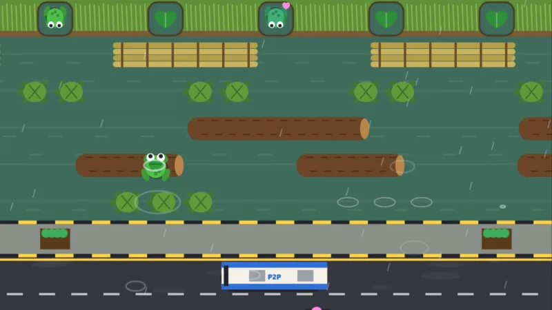

Tawid EDSA
The classic lane-crossing game, Pinoy style

ArcadeKeyboard · SwipeFree, in the browser
Play Tawid EDSAAbout the game
"Uwi na, Kokak!" Time to go home. It is raining in Manila, and Kokak the palaka (frog) is on the wrong side of the city's busiest road. His family is waiting on five gabi (taro) leaves on the far bank of the estero, the narrow canal behind the houses. To reach them he has to hop across lane after lane of traffic and then cross the water on whatever happens to float by.
This is the old lane-crossing arcade formula, rebuilt in 3D with Manila weather. There are four places, each with its own light and mood: Cubao at dusk under the MRT, España Boulevard in the baha (flood), Quiapo by the Pasig River in the golden hour, and Maynila on a rainy night under the LRT. After the fourth, the loop starts again, faster.
How to play
Each press moves Kokak one space. On the road, anything with wheels or hooves is deadly: jeepneys, point-to-point buses, taxis, tricycles, motorcycles, pedicabs, trucks and the kalesa (horse-drawn carriage). On the water it is the other way around. Kokak cannot swim here, so he has to ride something: a troso (log), a raft, a pagong (turtle), a batya (washtub), a salbabida (life ring), a banig (woven mat), a bangka (canoe), a ferry or a clump of water lilies. Ride off the edge of the screen and the current takes you.
Turtles, life rings and lilies sink every so often. You are fine while they are going under, but not once they have gone. At the top, hop straight into an empty gabi leaf; landing on the dike between leaves costs a frog. Fill all five leaves to clear the place. Each new row is worth points, and so is time left on the clock, a lamok (mosquito) sitting on a leaf, and a lost anak (little frog) riding a log that you carry home. Hop out of a lane a split second before a vehicle arrives and you earn a "Lusot!", a narrow escape bonus.
- Keyboard: arrow keys or WASD hop; hold to keep hopping. P pauses and M toggles the sound.
- Phone and tablet: swipe in a direction, tap to hop forward, or use the on-screen D-pad.
- Controller: the D-pad or stick hops, and Options pauses.
Madali (easy) is the default, with five lives, a 60-second clock, slower traffic and longer logs. Katamtaman (medium) is the classic three lives and forty seconds. Mahirap (hard) is two lives, thirty seconds and rush hour from the start.
Tips
- You do not have to keep moving. The island between the road and the water is a safe place to stop and read the river, until the ahas (snake) starts patrolling it in later places.
- Watch the gaps, not the cars. Hop into the space just behind a vehicle that has passed, rather than ahead of one that is coming.
- Logs carry you sideways. Plan to step off while you are still lined up with the leaf you want, not after you drift past it.
- Do not stand on a turtle for long. If its shell starts to wobble, it is about to dive.
- A buwaya (crocodile) may float by. Its back is safe to ride; its head is not. If you see its eyes in a leaf, wait.
EDSA, the estero and the rainy season
EDSA, short for Epifanio de los Santos Avenue, is the long highway that curves through Metro Manila from Caloocan to Pasay, with the MRT rail line running down its middle. For many Filipinos it means two things. It is where the People Power gatherings of 1986 took place, and it is a byword for traffic. Crossing it on foot is not something anyone should try; there are footbridges for that, which is why the game's Manong Enforcer (the traffic officer) reminds you that only a frog crosses this way.
The esteros are the old creeks and canals that thread through Manila toward the Pasig River. In the rainy season, heavy rain and typhoons can flood low streets quickly, and España is one of the roads people associate with knee-deep water. Health officials regularly warn against wading through flood water because of leptospirosis, an infection spread through water contaminated by the urine of infected animals, especially rats. Kokak gets a pass, being a frog.
Frogs belong to that rainy season too. In Filipino their croak is written "kokak", which is where the hero gets his name.